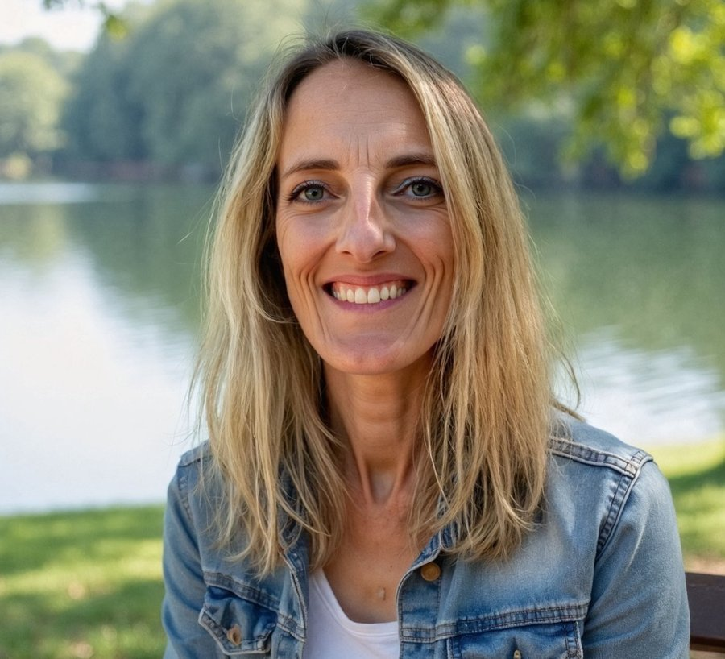
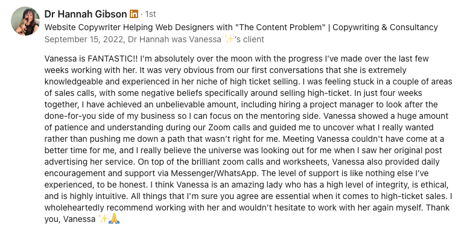
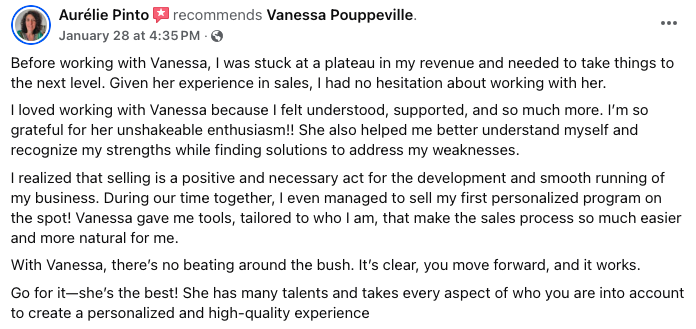
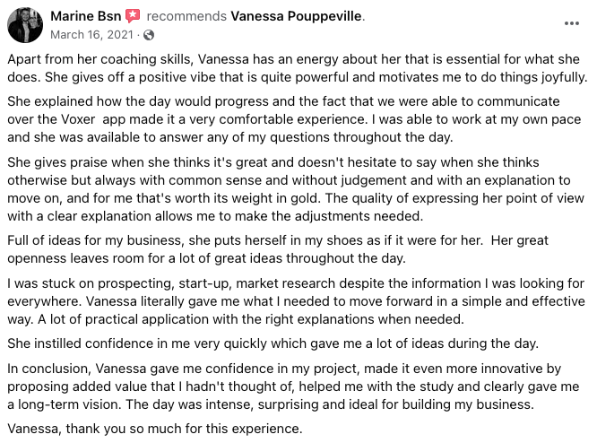
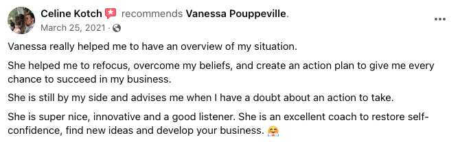

Remotiver et débloquer
Je travaille sur les freins et les croyances qui empêchent de vendre, pour redonner confiance et envie d'aller chercher de nouveaux clients.
Vingt ans de vente sur le terrain, n°1 en 2024 parmi les partenaires indépendants de mon réseau. Je coache les commerciaux pour qu'ils sortent de leurs habitudes, reprennent confiance et signent davantage.

Vidéo en anglais, sous-titrée en français · 1 min 45
Carlo Tarallo, fondateur d'une agence de marketing digital
« Elle m'a guidé tout au long du processus. Je vais pouvoir intégrer mon équipe commerciale plus vite que je ne le pensais. »
Ce que je transmets vient de ma propre expérience : vendre, recruter, animer et faire progresser des équipes.
Je travaille sur les freins et les croyances qui empêchent de vendre, pour redonner confiance et envie d'aller chercher de nouveaux clients.
Prospection multicanal, relances rigoureuses, suivi des cycles de vente longs : des méthodes simples que chacun peut appliquer dès le lendemain.
Depuis 2008, je recrute et manage des commerciaux indépendants : parfois sur le long terme, parfois pour mettre en place une nouvelle équipe.
Campagnes de marketing digital, programmes de parrainage, marketing relationnel local (événements, animations). J'intègre l'IA et les outils numériques dans la prospection, le suivi commercial et le marketing.
Recommandations publiées sur LinkedIn et Facebook, traduites de l'anglais. Pour chacune : un extrait, la traduction complète et l'original.
En seulement quatre semaines, j'ai accompli énormément
Extrait Je me sentais bloquée sur certains aspects des appels de vente, avec des croyances négatives, notamment autour de la vente high ticket. […] Vanessa a fait preuve d'une patience et d'une compréhension immenses pendant nos appels Zoom […]. Honnêtement, je n'avais jamais connu un tel niveau d'accompagnement.
Vanessa est FANTASTIQUE !! Je suis absolument ravie des progrès que j'ai faits ces dernières semaines avec elle. Dès nos premiers échanges, il était évident qu'elle est extrêmement compétente et expérimentée dans sa spécialité, la vente high ticket. Je me sentais bloquée sur certains aspects des appels de vente, avec des croyances négatives, notamment autour de la vente high ticket. En seulement quatre semaines, j'ai accompli énormément, y compris le recrutement d'une cheffe de projet pour gérer la partie « clés en main » de mon activité, afin de me concentrer sur le mentorat.
Vanessa a fait preuve d'une patience et d'une compréhension immenses pendant nos appels Zoom, et m'a guidée vers ce que je voulais vraiment plutôt que de me pousser sur une voie qui ne me correspondait pas. Rencontrer Vanessa n'aurait pas pu mieux tomber, et je crois vraiment que l'univers veillait sur moi quand j'ai vu sa publication présentant son offre. En plus des excellents appels Zoom et des fiches de travail, Vanessa m'a apporté encouragements et soutien quotidiens via Messenger et WhatsApp. Honnêtement, je n'avais jamais connu un tel niveau d'accompagnement.
Vanessa est une femme formidable, d'une grande intégrité, éthique et très intuitive — des qualités essentielles, vous en conviendrez, dans la vente high ticket. Je recommande vivement de travailler avec elle et je n'hésiterais pas à retravailler avec elle. Merci, Vanessa.

Avec Vanessa, on ne tourne pas autour du pot. C'est clair, on avance, et ça marche
Extrait J'ai compris que vendre est un acte positif et nécessaire au développement et au bon fonctionnement de mon entreprise. Pendant notre accompagnement, j'ai même réussi à vendre mon premier programme personnalisé sur le champ !
Avant de travailler avec Vanessa, mon chiffre d'affaires stagnait et j'avais besoin de passer à la vitesse supérieure. Vu son expérience dans la vente, je n'ai pas hésité à travailler avec elle.
J'ai adoré travailler avec Vanessa parce que je me suis sentie comprise, soutenue, et bien plus encore. Je lui suis tellement reconnaissante pour son enthousiasme inébranlable !! Elle m'a aussi aidée à mieux me connaître et à identifier mes forces, tout en trouvant des solutions pour travailler mes points faibles.
J'ai compris que vendre est un acte positif et nécessaire au développement et au bon fonctionnement de mon entreprise. Pendant notre accompagnement, j'ai même réussi à vendre mon premier programme personnalisé sur le champ ! Vanessa m'a donné des outils adaptés à qui je suis, qui rendent la vente beaucoup plus simple et naturelle pour moi.
Avec Vanessa, on ne tourne pas autour du pot. C'est clair, on avance, et ça marche.
Foncez, c'est la meilleure ! Elle a de nombreux talents et prend en compte chaque facette de votre personnalité pour créer une expérience personnalisée et de grande qualité.

Vanessa m'a littéralement donné ce dont j'avais besoin pour avancer de façon simple et efficace
Extrait J'étais bloquée sur la prospection, le démarrage et l'étude de marché, alors que je cherchais les informations partout. […] Elle m'a très vite donné confiance, ce qui m'a apporté beaucoup d'idées dans la journée.
Au-delà de ses compétences de coach, Vanessa a une énergie essentielle à ce qu'elle fait. Elle dégage une vibration positive très puissante, qui me motive à avancer avec joie.
Elle m'a expliqué le déroulement de la journée, et le fait de pouvoir communiquer via l'application Voxer a rendu l'expérience très confortable. J'ai pu travailler à mon rythme, et elle était disponible pour répondre à toutes mes questions tout au long de la journée.
Elle félicite quand elle trouve que c'est très bien et n'hésite pas à dire quand elle pense le contraire, mais toujours avec bon sens, sans jugement et avec une explication pour avancer — pour moi, ça vaut de l'or. Sa façon d'exprimer son point de vue avec une explication claire me permet de faire les ajustements nécessaires.
Pleine d'idées pour mon entreprise, elle se met à ma place comme si c'était pour elle. Sa grande ouverture laisse place à beaucoup de belles idées tout au long de la journée.
J'étais bloquée sur la prospection, le démarrage et l'étude de marché, alors que je cherchais les informations partout. Vanessa m'a littéralement donné ce dont j'avais besoin pour avancer de façon simple et efficace. Beaucoup d'application concrète, avec les bonnes explications quand il le fallait.
Elle m'a très vite donné confiance, ce qui m'a apporté beaucoup d'idées dans la journée.
En conclusion, Vanessa m'a donné confiance en mon projet, l'a rendu encore plus innovant en me proposant une valeur ajoutée à laquelle je n'avais pas pensé, m'a aidée dans l'étude et m'a clairement donné une vision à long terme. La journée a été intense, surprenante et idéale pour construire mon entreprise.
Vanessa, merci beaucoup pour cette expérience.

C'est une excellente coach pour retrouver confiance en soi, trouver de nouvelles idées et développer son activité
Extrait Vanessa m'a vraiment aidée à avoir une vue d'ensemble de ma situation. Elle m'a aidée à me recentrer, à dépasser mes croyances et à construire un plan d'action pour me donner toutes les chances de réussir dans mon entreprise.
Vanessa m'a vraiment aidée à avoir une vue d'ensemble de ma situation.
Elle m'a aidée à me recentrer, à dépasser mes croyances et à construire un plan d'action pour me donner toutes les chances de réussir dans mon entreprise.
Elle est toujours à mes côtés et me conseille quand j'ai un doute sur une action à mener.
Elle est super gentille, innovante et à l'écoute. C'est une excellente coach pour retrouver confiance en soi, trouver de nouvelles idées et développer son activité.

J'accompagne des TPE/PME et des entrepreneurs : techniques et stratégies de vente, structuration et pilotage d'équipes commerciales. Je recrute et manage des commerciaux indépendants, sur le long terme ou pour la mise en place de nouvelles équipes.
Photovoltaïque B2B (projets jusqu'à 1 M€, cycle de vente complet), courtage gaz et électricité, rénovation de l'habitat, secteur médical.
Gérante d'une société de communication événementielle (2006 – 2008), commerciale et visiteuse médicale en santé et parapharmacie (2002 – 2006).
Technico-commerciale de santé (2002)
Formation continue en marketing digital (FR/US)
Français, anglais courant
Un premier échange pour comprendre où en sont vos commerciaux et ce qui les ferait avancer.